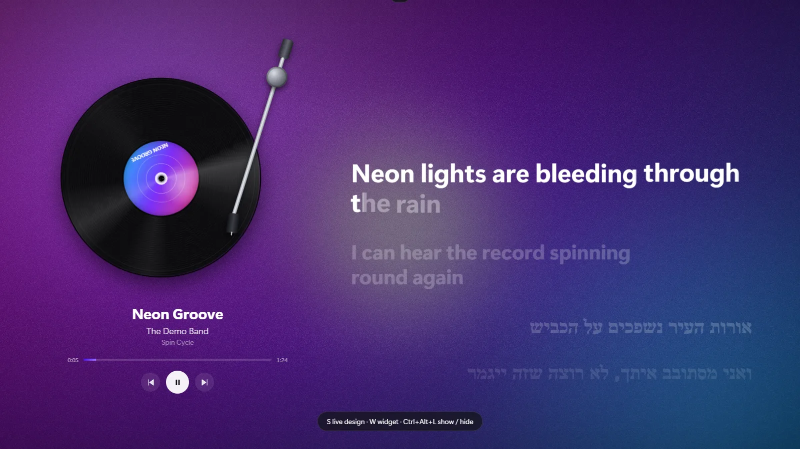

Real vinyl
The album cover becomes the record label, or the whole disc in picture-disc mode. Eased spin-up, a tonearm that tracks the song, and 3D tilt that follows your mouse.
Needledrop turns the song that is playing into a spinning vinyl with lyrics that light up word by word. It runs beside the Apple Music app: no account, no login, nothing injected.

Apple Music for Windows has no visualiser and no immersive lyrics view. Needledrop adds both, as a separate window that follows the real app.
The album cover becomes the record label, or the whole disc in picture-disc mode. Eased spin-up, a tonearm that tracks the song, and 3D tilt that follows your mouse.
Synced lyrics from LRCLIB with true per-word timing when available. Five singing effects, five entrances and three layouts: scroll, focus and poster.
Fonts, size, colours from the cover or your own, glow, background, vinyl and layout. Save presets and share a look as a short code. Every change is instant.
Background and record pulse with the bass, with an optional equaliser. Audio is analysed in memory in the window and never recorded or sent anywhere.
Shrink to a small always-on-top card with the current line, or let the screensaver take over after idle time: a big clock, the drifting cover and poster-size lyrics.
Previous, play-pause and next from the window or keyboard, tray menu, launch at startup, and a global hotkey (Ctrl+Alt+L) to show or hide it from any app.
Apple Music for Windows is a closed Store app, so nothing can be injected into it. Needledrop reads what the app already publishes to Windows.
The app publishes title, artist, cover and position to the Windows media session, the same one that powers the system volume flyout.
It samples that session about 2.5 times a second and time-stamps every sample, so lyrics, vinyl and tonearm run from one clock and never drift apart.
Lyrics are looked up on LRCLIB, cached locally and matched to the song. Per-word timing is used where it exists and estimated otherwise.
To find lyrics, Needledrop sends the song title, artist, album and duration to lrclib.net. Nothing else leaves your computer.
No sign-up, no login, no analytics and no tracking of any kind.
Audio is analysed in memory for the bass reaction and then discarded. Nothing is recorded or played back.
Settings and the lyrics cache live in your user profile and are kept when you uninstall.
MIT licensed. The lyrics logic is unit-tested, and you can read every line that runs.
Free and open source. Unzip, double-click Install.cmd, then play something in Apple Music.
No. Needledrop is an independent project and is not affiliated with, endorsed by or sponsored by Apple Inc. “Apple Music” is a trademark of Apple Inc., used only to say which app Needledrop works with.
No. It is free, has no accounts and works with whatever you are already playing in Apple Music.
The app itself runs locally. Looking up lyrics needs an internet connection the first time; found lyrics are cached on your computer.
Yes. Run the demo mode from source (npm run demo) for a built-in fake song, three demo tracks and word-timed lyrics.
Shift the sync for that song with the [ and ] keys (hold Shift for whole seconds), or use the sync slider. You can also drop an .lrc or .txt file on the window to set a song’s lyrics.
Use Settings, Apps like any other program. Your settings and lyrics cache are kept unless you delete them.